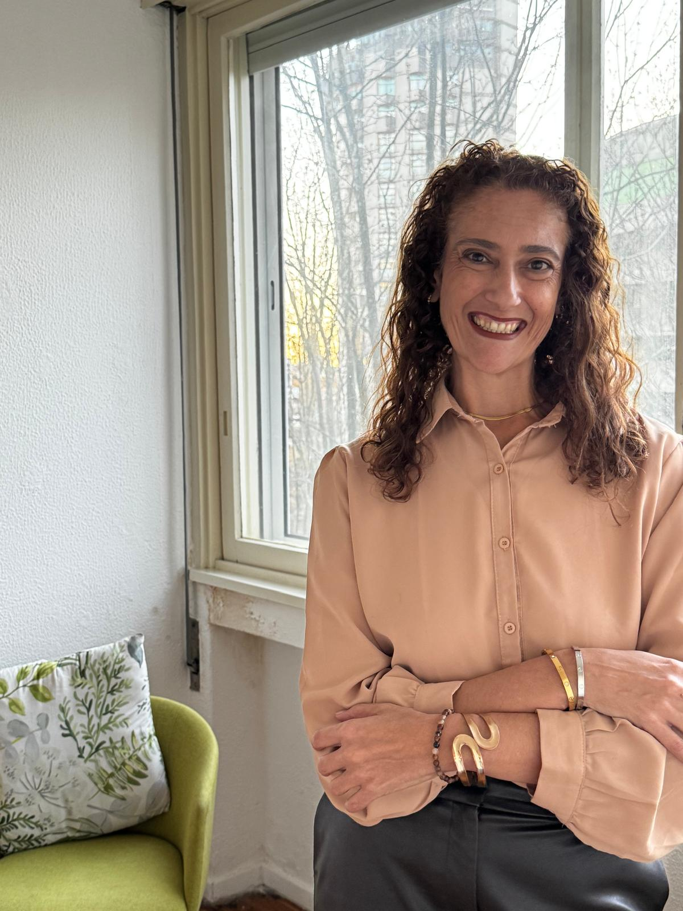
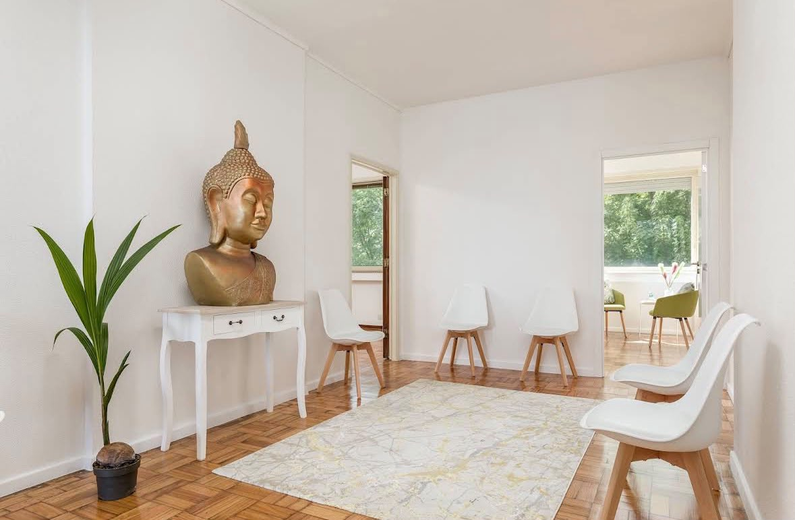
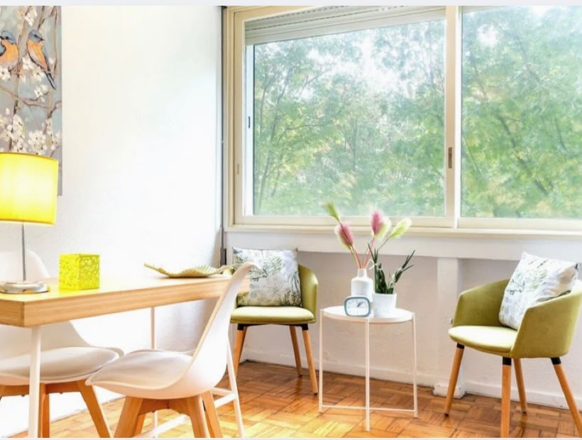
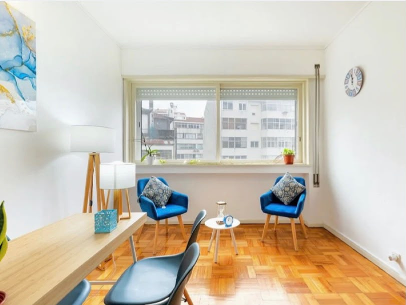

Adultos
Um espaço de escuta e reflexão para olhar com cuidado para suas experiências, relações e desafios.
Saiba maisUm espaço de escuta e acolhimento
Acompanhamento psicológico para adultos, crianças e adolescentes, com respeito à história e ao tempo de cada pessoa.

Olá, sou Emanuella
A psicoterapia pode ser um espaço de conversa, reflexão e cuidado, construído de forma singular para cada pessoa.
Como posso acolher você
Um espaço de cuidado para diferentes momentos e etapas da vida.
Um espaço de escuta e reflexão para olhar com cuidado para suas experiências, relações e desafios.
Saiba maisAcolhimento pensado para a infância, respeitando as formas próprias de expressão e o tempo de cada criança.
Saiba maisUm ambiente de confiança para conversar sobre mudanças, sentimentos e questões importantes dessa fase.
Saiba maisCom presença e cuidado
Cada atendimento começa com uma conversa. Online ou presencial, o primeiro passo é entender o que faz sentido para você e tirar suas dúvidas com tranquilidade.
Vamos conversar sobre issoUm lugar para se sentir acolhido
Um ambiente tranquilo e acolhedor para os atendimentos presenciais. Veja um pouco do consultório.



O atendimento também pode ser online. Para saber mais sobre o presencial e combinar sua visita, entre em contato.
Falar com a EmanuellaSeu primeiro passo
Entre em contato para saber mais sobre os atendimentos online e presenciais. Será um prazer acolher suas dúvidas.
Conversar pelo WhatsApp +351 910 943 390